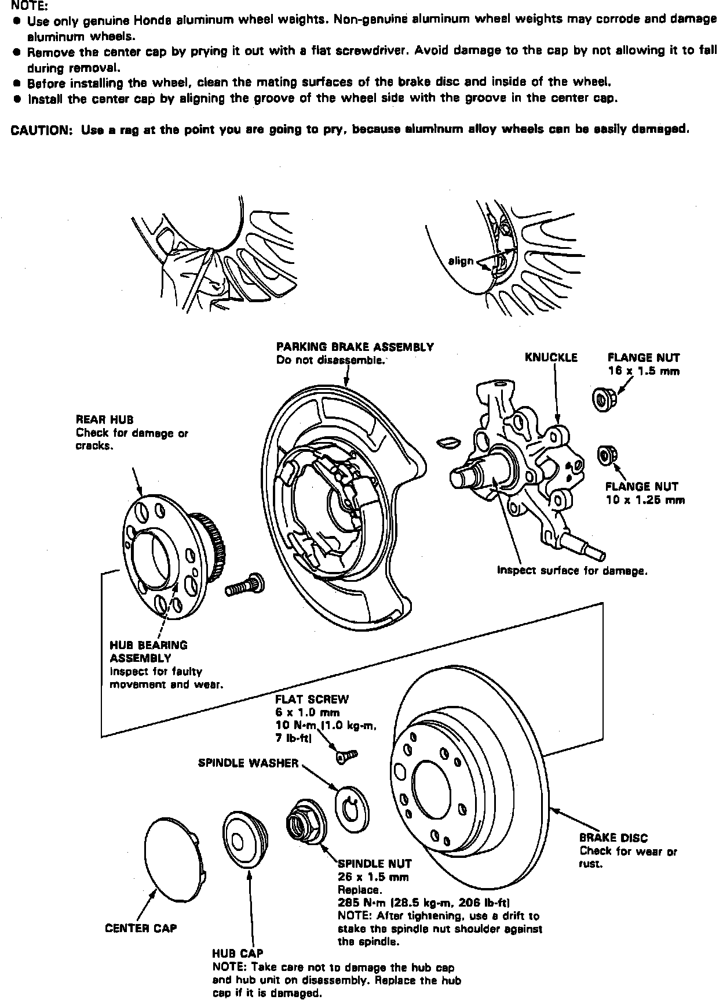

Rear
Fig. 11 Exploded View Of Hub Carrier & Rear Axle Shaft:

1. Raise and support rear of vehicle.
2. Remove rear wheel.
3. Remove hub cap, then pry spindle locknut tab away from spindle, then loosen spindle nut.
4. Remove brake hose bracket attaching bolt.
5. Remove caliper assembly, then using suitable wire, hang aside.
6. Install two 8 x 12 mm bolts to brake disc, then turn each two turns at a time to remove disc from hub.
7. Remove hub assembly from knuckle, Fig. 11.
8. Reverse procedure to install. Tighten hub nut to 206 ft. lbs.